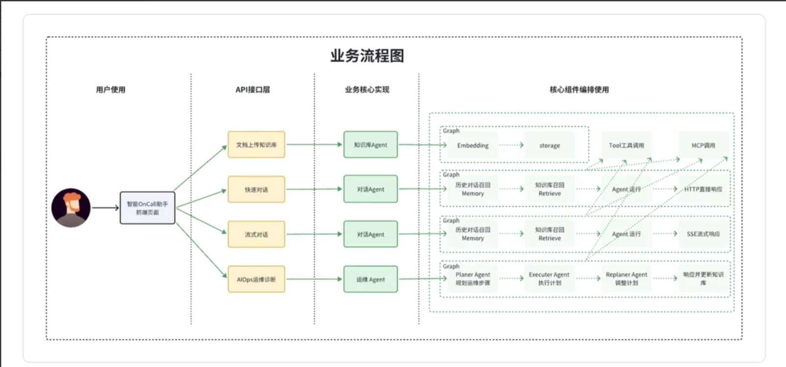
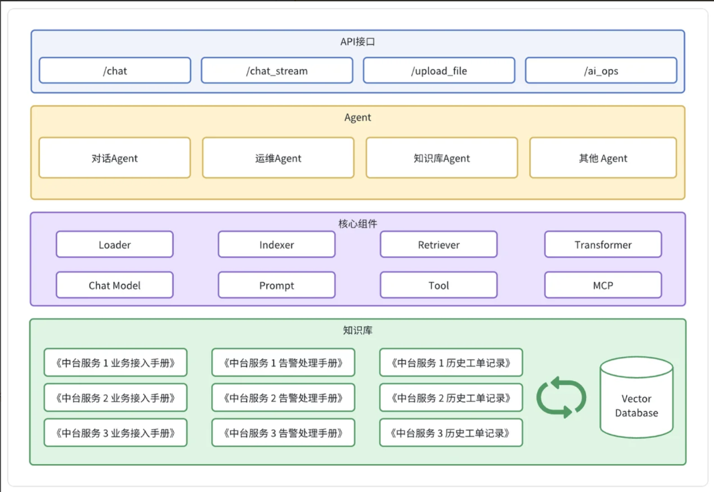

🧠 项目背景
在日常的运维工作中，OnCall（值班）告警处理是一项既重要又繁琐的任务。每当线上系统出现异常，值班人员需要在第一时间收到告警通知，并根据告警信息快速定位问题、分析原因、协调处理。然而，这个过程存在诸多痛点：
- 告警噪音过多：一次故障可能触发大量重复告警，值班人员容易被海量信息淹没
- 信息碎片化：告警信息分散在多个系统，需要人工汇总分析
- 响应时效要求高：即使在深夜，值班人员也必须保持警觉，及时响应
- 经验难以传承：处理告警的经验主要依赖个人积累，新人上手慢
随着大语言模型（LLM）技术的快速发展，我们开始探索利用AI能力来辅助甚至部分替代人工处理OnCall告警。智能OnCall Agent正是为了解决这些问题而诞生的项目。
📌 目标功能
- 文件上传知识库（知识库管理）：这个功能支持团队将各种文档（比如故障处理手册、服务接入说明等）上传到系统。它为大模型提供了可靠的知识来源，实现了团队经验的持续沉淀和高效复用。
- 对话交互支持（Chatbot）：值班人员可以通过自然语言与系统进行交互，快速查询故障处理手册。例如，你可以直接问：错误码120000001的原因是什么？系统会立即从《XX系统错误码手册》中返回精准的错误原因。
- AIOps运维诊断（运维Agent）：系统接收到告警通知后（例如接口失败率过高），会按照预设的步骤自动开始排查。它可能会调用日志API查询最近一小时的error日志，调取监控面板查看失败率的趋势，然后聚合数据并返回关键信息，比如：近三十分钟内context cancel错误占比百分之九十，疑似为下游系统异常。
🏗️ 技术选型
基于项目的需求和目标，我们进行了以下技术选型：
🎯 前后端开发框架
- 前端：Vue3 + ElementPlus
- 后端：Kitex + Hertz + Eino
- 数据库：MySQL
- 缓存：Redis
- 消息队列：Kafka
- 向量数据库：Milvus
💡 Eino框架是什么，为什么不选择LangChain？
Eino框架是字节跳动开源的一个大模型应用开发框架，核心思想是用图Graph来定义Agent的工作流。在我的理解里，图中的每个节点代表一个原子能力，比如大模型节点、召回使用的Retriever节点等。边则代表了这些节点之间的执行顺序和数据流向。在项目中，我用Eino来构建不同的Agent。比如ChatAgent，把召回、Prompt构建、ReAct定义成节点，然后用边把它们连起来。这样，整个Agent的执行过程就变得非常清晰和可配置。选择Eino主要是看中它这种直观的图编排能力和对工作流状态的维护，让我们能相对容易地构建和调试复杂的Agent。
为什么不选择LangChain？其实要从它们适合的场景来分析
选择Eino的场景：
- 高性能生产环境：需要处理高并发请求
- 强类型要求：需要编译时类型安全
- Go技术栈：团队主要使用Go语言
选择LangChain的场景：
- 快速原型开发：需要快速验证想法
- 社区资源：需要大量的示例和教程
- Python生态：团队熟悉Python和相关库
在实际项目中，技术选型应该基于团队的技术栈、项目需求、性能要求和长期维护考虑。 对于追求性能和稳定性的生产环境，Eino提供了优秀的Go原生解决方案。 而对于快速迭代和研究型项目，LangChain的灵活性和生态优势更加明显。 Eino虽在生态覆盖度上略逊于LangChain，但其强类型带来的稳定性、Graph编排的开发效 率、字节实践的可靠性，更适合企业级生产落地。
📖 向量数据库为什么选择Milvus？
目前市面上有四种类型的向量数据库：
- 集成了向量搜索插件的现有关系型或列型数据库，比如PGVector
- 支持密集向量索引的传统倒排索引的ElasticSearch
- 基于向量搜索库构建的轻量级向量数据库，Chroma
- 专用向量数据库：这类数据库专门为向量搜索而设计的向量数据库：
- Milvus
- Faiss
- HNSW
Milvus是一个基于向量数据库的系统，它支持高维度向量的存储和检索。在智能OnCall Agent中，向量数据库主要用于存储告警信息的向量表示，以便后续的相似度查询和根因推理。
选择Milvus通常不是因为"它能存向量"这么简单，而是因为你需要一个把向量检索当成核心能力来设计的系统：既能做高性能 ANN，又能做过滤、混合检索、全文检索和更大规模的扩展。Milvus 官方把自己定位为开源、云原生的向量数据库，面向从本地原型到大规模分布式部署的场景。
主要优势：
- Milvus不只支持 dense vector，还支持 sparse vector、BM25 全文检索、multi-vector hybrid search，并且可以把这些能力放在同一个 collection 里组合使用。对很多知识库检索来说，这意味着你可以把"语义召回"和"关键词命中"放到同一套检索链路里，而不是自己拼很多外部组件。
- Milvus 对工程化检索支持比较完整。Milvus 支持在 ANN 搜索前先做 metadata filtering，把检索范围限制在满足条件的数据子集里，这对带租户、时间、类别、权限等条件的业务很重要。它还支持 rerankers、多种搜索类型，以及把搜索和结构化字段一起组织在 collection 中。
🤖 LLM集成
项目将集成主流的大语言模型API，用于：
- 告警分析：自动理解告警内容，判断问题类型和紧急程度
- 根因推理：基于告警信息和历史数据，推测可能的根因
- 处理建议：生成初步的处理建议，供值班人员参考
本项目将采用本地Ollama部署的qwen3-coder-next模型，避免依赖外部API，确保数据安全和隐私保护。嵌入模型选择text-embedding-v4，因为它在语义相似度计算方面表现优异，能够提供准确的向量表示。维度为1024。
🧪 核心功能设计
🔔 告警处理流程
智能OnCall Agent的核心工作流程如下：
- 告警接收：从多个渠道（Prometheus、Alertmanager、自定义WebHook）接收告警
- 告警聚合：对相似告警进行聚合，减少噪音
- LLM分析：将告警信息发送给LLM，获取分析结果
- 处理执行：根据分析结果，执行预设的自动化操作
- 结果反馈：将处理结果通知给值班人员
业务流程如下

🧩 系统架构
系统架构总的来说，包含四个接口、三个核心模块以及多个辅助组件:
- 知识库管理模块：当你需要让AI回答特定领域问题时，如果直接将长文本丢给大模型，会受限于模型的上下文窗口大小，导致成本高、速度慢、准确率低。知识库管理模块通过采用先检索相关内容，再生成答案的策略，完美地解决了这些问题。
- 对话Agent：这是一个智能交互系统，它能够像真人一样理解你的问题、调用知识库和相关的MCP工具，并给出精准的回答。它尤其适合用来处理高频重复的咨询类场景。
- 运维Agent：它可以像资深工程师一样，自动接收告警、按预设步骤排查问题、分析根因并给出处理建议，甚至能够自动执行标准化操作，将工程师从重复劳动中彻底解放出来。

📋 项目的预期
✅ 基础预期与达成情况
基础预期分为3个核心维度，目前都已达成：
- 业务价值预期：能解决最初设定的核心痛点，把XX场景的多步骤重复任务自动化，覆盖80%的高频场景，把1小时的任务压缩到5分钟完成，内部测试用户满意度90%
- 功能可用性预期：能稳定完成多步规划、多工具调度、异常处理，核心任务成功率85%以上，不会频繁崩盘、无限循环、出现幻觉
- 工程稳定性预期：完成了模块化架构设计，支持工具快速接入、权限管控、高并发请求，能支撑小范围内部用户使用。
🚩 最终预期与当前短板
这个Agent的最终预期，是打造一个高智能、高鲁棒性、高泛化性、能适配复杂业务场景的垂直领域Agent，真正成为用户的"数字助理"，而不只是简单的任务执行工具。目前的短板，也是我后续优化的核心方向：
- 复杂长链路任务的规划能力不足：超过10步的复杂任务，规划偏离、逻辑断裂的问题明显，任务成功率会降到60%左右，后续会优化规划模块，加入多智能体协同、长程规划优化
- 个性化与持续学习能力不足：目前只能基于预设规则和历史经验执行，无法基于用户反馈、使用习惯自主学习优化，后续会优化记忆系统和反思模块，加入在线学习能力
- 多模态能力融合不够深入：目前只能处理文本信息，对图片、文档、音频的处理能力较弱，后续会接入多模态大模型，优化多模态知识检索和理解能力